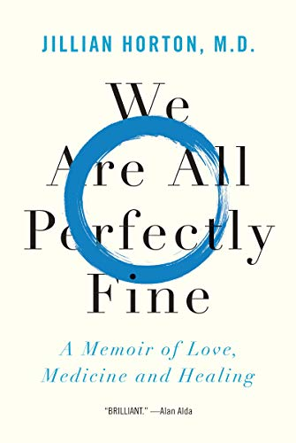

Hi nice to meet you! My name is Pratiksha Badola and I am, among other things, a passionate reader. I love sharing my thoughts on books with others and engaging with others about my favourite books, and this blog is a manifestation of that! Here I review my recent reads, update my TBR list and host my book club! If any of that interests you, read on!

Currently reading: We Are All Perfectly Fine by Jillian Horton, M.D.
Synopsis: We Are All Perfectly Fine is the story of a married mother of three on the brink of personal and professional collapse who attends rehab with a twist: a meditation retreat for burned-out doctors.
Stay tuned for my review of this book!